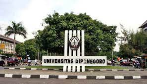

Universitas Diponegoro (UNDIP)
Universitas Diponegoro (UNDIP) adalah sebuah perguruan tinggi negeri di Indonesia yang berlokasi di Semarang, Jawa Tengah, Indonesia. Saat ini Undip telah memiliki 11 Fakultas dan 2 Sekolah. Kampus utama Undip terletak di daerah Tembalang, dan kampus utama lainnya terletak di daerah Pleburan.
Undip didirikan pada tanggal 9 Januari 1957 sebagai Perguruan Tinggi Swasta dan baru mendapat status sebagai Perguruan Tinggi Negeri pada tanggal 9 Januari 1960. Kata Diponegoro diambil dari Pangeran Diponegoro. Berdasarkan Peraturan Pemerintah Nomor 52 Tahun 2015, Undip ditetapkan statusnya menjadi Perguruan Tinggi Negeri Badan Hukum.
Sejarah
Sekitar awal tahun 1950-an masyarakat Jawa Tengah pada umumnya dan masyarakat Semarang khususnya, membutuhkan kehadiran sebuah universitas sebagai pelaksana pendidikan dan pengajaran tinggi. Tujuannya untuk membantu pemerintah dalam menangani dan melaksanakan pembangunan di segala bidang khususnya bidang pendidikan. Pada waktu itu di Provinsi Jawa Tengah dan Yogyakarta hanya memiliki Universitas Gadjah Mada yang berstatus sebagai universitas negeri.
Sementara jumlah lulusan sekolah menengah atas di Jawa Tengah bagian utara yang akan melanjutkan pendidikan tinggi di universitas makin meningkat, namun karena masih sangat terbatasnya universitas yang ada, maka tidak semua lulusan dapat tertampung. Menyadari akan kebutuhan pendidikan tinggi yang semakin mendesak, kemudian dibentuk Yayasan Universitas Semarang dengan Akte Notaris R.M. Soeprapto No. 59 tanggal 4 Desember 1956 sebagai langkah awal didirikannya universitas di Semarang dengan nama Universitas Semarang yang secara resmi dibuka pada tanggal 9 Januari 1957, dengan Presiden Universitas (sekarang disebut rektor) yang pertama adalah Mr. Imam Bardjo.
Pada Dies Natalis ketiga Universitas Semarang pada tanggal 9 Januari 1960, Presiden Republik Indonesia, Ir. Soekarno mengganti nama Universitas Semarang menjadi Universitas Diponegoro. Perubahan nama ini merupakan penghargaan terhadap Universitas Semarang atas prestasinya dalam pembinaan bidang pendidikan tinggi di Jawa Tengah.Keputusan Presiden ini kemudian dikukuhkan dengan Peraturan Pemerintah No 7 Tahun 1961 dan Surat Keputusan Menteri Pendidikan, Pengajaran dan Kebudayaan No 101247/UU tanggal 3 Desember 1960.
Keputusan tersebut berlaku surut mulai tanggal 15 Oktober 1957 dengan ketentuan tanggal tersebut ditetapkan sebagai Dies Natalis Undip mengingat pada tanggal tersebut terjadi “Pertempuran Lima Hari” revolusi fisik di kota Semarang. UNDIP memilih tanggal ini untuk meneruskan cita-cita pejuang kemerdekaan bangsa dalam mengisi kemerdekaan dengan mencerdaskan bangsa. UNDIP adalah bentuk sumbangsih para penerus bangsa atas amanah yang ditinggalkan para pejuang kemerdekaan.
Tahun 1957 ditetapkan sebagai tahun berdirinya Undip, dengan memperhatikan realitas sejarah bahwa Universitas Semarang sebagai universitas swasta – yang berdiri tahun 1957 merupakan embrio Universitas Diponegoro. Penetapan Dies Natalis Undip tanggal 15 Oktober 1957 telah dinyatakan dalam laporan rektor pada Dies Natalis Undip yang ke 13.